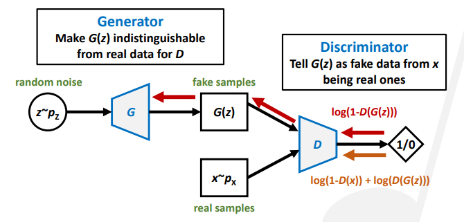
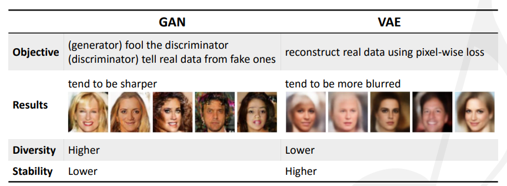
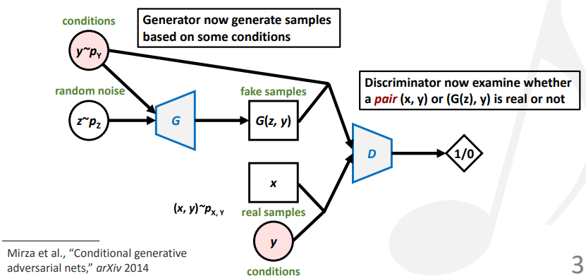
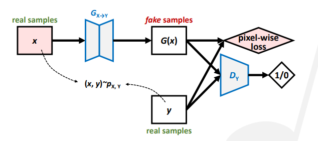
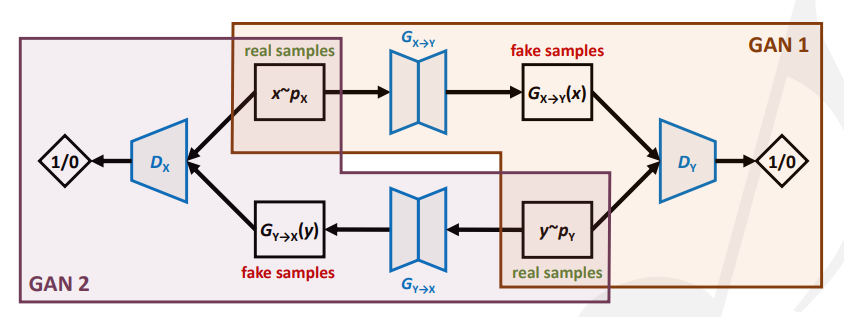
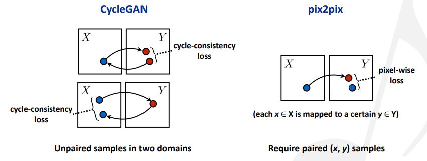

Notes for tutorial “Generating Music with GANs—An Overview and Case Studies” at ISMIR 2019
Overview of music generation research
音乐制作角度
- 作曲（songwriting）：旋律，和弦，歌词
- 编曲（arranging）：器乐，结构
- 混音（mixing）：音色，平衡
音乐人工智能的应用场景：
- 激发音乐人的创作灵感
- 让每个人都可以制作音乐
- 为视频或游戏生产版权自由的音乐
- 音乐教育（比如自动伴奏）
相关公司：参考这篇文章
深度学习的角度
- 输入表示
- 模型
- 基于规则的方法
- 基于连接的方法
- 基于机器学习的方法：VAE，GAN
- 输出表示
输入/输出表示
- 符号输出：钢琴卷（类似图像），MIDI（类似文本），乐谱（混合）
- 音频输出：频谱（类似图像），波形
scope
- 从头开始生成：由某个输入得到旋律，钢琴卷或音频
- 条件生成：由旋律得到钢琴卷（伴奏），由钢琴卷得到音频（合成），由钢琴卷A得到钢琴卷B（重新编曲），由音频A得到音频B
一些重要的工作：
- Symbolic melody generation: MidiNet [1], SSMGAN [2]
- Arrangement generation: MuseGAN [3], BinaryMuseGAN [4], LeadSheetGAN [5]
- Style transfer: CycleGAN [6], TimbreTron [7], Play-as-you-like [8], CycleBEGAN [9]
- Audio generation: WaveGAN [10], GANSynth [11]
>
[1] “MidiNet: A convolutional GAN for symbolic-domain music generation,” ISMIR 2017
[2] “Modeling self-repetition in music generation using structured adversaries,” ML4MD 2019
[3] “MuseGAN: Multi-track sequential GANs for symbolic music generation and accompaniment,” AAAI 2018
[4] “Convolutional GANs with binary neurons for polyphonic music generation,” ISMIR 2018
[5] “Lead sheet generation and arrangement by conditional GAN,” ISMIR-LBD 2018
[6] “Symbolic music genre transfer with CycleGAN,” ICTAI 2018
[7] “TimbreTron: A WaveNet(CycleGAN(CQT(Audio))) pipeline for musical timbre transfer,” ICLR 2019
[8] “Play as You Like: Timbre-enhanced multi-modal music style transfer,” AAAI 2019
[9] “Singing style transfer using cycle-consistent boundary equilibrium GANs,” ICML workshop 2018
[10] “Adversarial audio synthesis,” ICLR 2019
[11] “GANSynth: Adversarial neural audio synthesis,” ICLR 2019
Introduction to GANs
训练生成模型的损失函数定义为对数损失函数。流向判别器的损失是将真实样本判断为假和将假样本判断为真。流向生成器的损失是被判别器判断为假的样本数，因为我们希望生成的样本尽可能让判别器认为是真的。

不规范的GANs存在一些问题。关键在于，判别器为生成器提供的梯度指出了改进方向。判别比生成简单，而判别器倾向于提供大的梯度（在图像中体现为明显的颜色变化），导致生成器的训练不够稳定。常见的失败情况有模式损坏（mode collapse，被判断为假的区域中有一块缺失判断），模式缺失（missing modes，被判断为真的区域中有一块缺失判断）。
规范化的GANs：为生成器提供更光滑的引导，减轻问题。
demo: GAN for images （Google Colab)
GANs vs VAEs

State of the Art
可以在这个网站查看各种各样的GANs模型。
BigGANs：在潜空间上插值。demo (Google Colab)
Conditional GAN (CGAN)

关键：对生成器和判别器都输入条件。
pix2pix：用逐像素点的损失来监督。

Cycle-consistent GAN (CycleGAN)：用循环一致的损失来监督。用于image-to-image translation（比如风格迁移）。

pix2pix和CycleGAN的损失计算如下图：

Case studies of GAN-based systems
音乐生成的分类：
- 符号旋律生成：X->旋律
- 编曲生成：X->钢琴卷，旋律->钢琴卷
- 风格迁移：钢琴卷A->钢琴卷B，音频A->音频B
- 音频生成：X->音频，钢琴卷->音频
符号旋律生成
MidiNet: